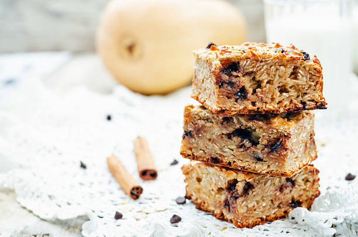

Peanut Butter Banana Baked Oatmeal Bars

Description
Easy meal prep recipes that can be made quickly and has common ingredients that you may have laying around the kitchen.
Ingredients
- 1 1/2 cup of quick cooking oats
- 1 tsp baking powder
- 1/2 tsp salt
- 1 tsp cinnamon
- 2 overripe bananas (mashed)
- 1//4 cup creamy peanut butter
- 1 tsp vanilla extract
- 1/4 cup maple syrup
- 1 large egg
- 3/4 cup whole milk
Steps
- Preheat oven to 350F or 177C
- LGrease a 9x9in baking pan
- Mash bananas in a bowl
- Add peanut butter, vanilla, maple syrup, milk, and egg
- Stir until homogenous
- Add oats, baking powder, salt, and cinnamon and stir
- Bake for 25 minutes or until the top slightly spring back and the edges are light brown
- Let it cool
- Store in regridgerator, and then reheat in microwave or eat it cold